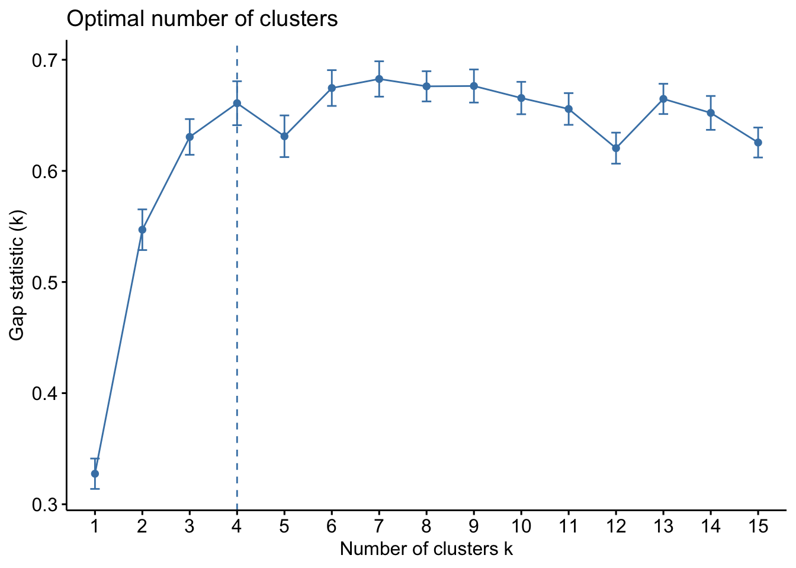

#|warning: false
#|message: false
library(factoextra)
library(tidyverse)
library(tidylog)
library(palmerpenguins)Implémenter Kmeans avec R
1 Introduction
Le partitionnement (clustering) est une méthode d’apprentissage non supervisée qui vise à rassembler les observations similaires d’un jeu de données en des sous-groupes bien distincts les uns des autres. Cela est particulièrement utile pour le ciblage de clients, la définition de nouveau kit ou pack produit. Une méthode de clustering des plus utilisées est le kmeans (K-moyennes) qui vise à créer k groupes à partir de votre jeu de données. L’algorithme est assez simple et intuitif, je vous laisse une vidéo ici.
Dans ce tutoriel, nous allons apprendre comment implémenter la méthode des kmeans sur un jeu données notamment palmerpenguins. Si vous le souhaitez une copie pdf de ce tutoriel est disponible ici
2 Librairies utiles
L’algorithme des kmeans, est disponible dans le R de base via la fonction kmeans() . Nous aurons besoin du package tidyverse pour la manipulation des données et de palmerpenguins pour le jeu de données.
3 Préparation des données
La méthode des kmeans requiert uniquement des données numériques et ne tolère pas de données manquantes. En effet la similarité entre les observations est en fait une mesure de distance (par exemple euclidienne) entre elles. Plus la distance entre deux observations est petite, plus ces dernières sont similaires. Alors jetons regardons de près notre jeu de données
penguins %>%
glimpse()Rows: 344
Columns: 8
$ species <fct> Adelie, Adelie, Adelie, Adelie, Adelie, Adelie, Adel…
$ island <fct> Torgersen, Torgersen, Torgersen, Torgersen, Torgerse…
$ bill_length_mm <dbl> 39.1, 39.5, 40.3, NA, 36.7, 39.3, 38.9, 39.2, 34.1, …
$ bill_depth_mm <dbl> 18.7, 17.4, 18.0, NA, 19.3, 20.6, 17.8, 19.6, 18.1, …
$ flipper_length_mm <int> 181, 186, 195, NA, 193, 190, 181, 195, 193, 190, 186…
$ body_mass_g <int> 3750, 3800, 3250, NA, 3450, 3650, 3625, 4675, 3475, …
$ sex <fct> male, female, female, NA, female, male, female, male…
$ year <int> 2007, 2007, 2007, 2007, 2007, 2007, 2007, 2007, 2007…Le jeu de données penguins est constitué de 344 observations et 8 variables dont trois catégorielles et 5 numériques. La variable année bien que numérique n’est pas pertinente pour l’analyse. Nous les enlèverons pour la suite, pour cela nous utiliserons la fonction select_if() de dplyr . Les données manquantes seront supprimés dans notre cas avec la fonction drop_na()
#|label: 'selection-numérique'
#|message: true
penguins_num <- penguins %>%
select(-year) %>%
select_if(is.numeric) %>%
drop_na()
glimpse(penguins_num)Rows: 342
Columns: 4
$ bill_length_mm <dbl> 39.1, 39.5, 40.3, 36.7, 39.3, 38.9, 39.2, 34.1, 42.0…
$ bill_depth_mm <dbl> 18.7, 17.4, 18.0, 19.3, 20.6, 17.8, 19.6, 18.1, 20.2…
$ flipper_length_mm <int> 181, 186, 195, 193, 190, 181, 195, 193, 190, 186, 18…
$ body_mass_g <int> 3750, 3800, 3250, 3450, 3650, 3625, 4675, 3475, 4250…Voilà qui est fait, notre je de données est réduit à présent à quatres variables et 342 observations.
Lorsque les données sont exprimées dans des unités différentes comme ici grammes et millimètres, les variables ne sont pas intercomparables. Pour résoudre cela, les données sont parfois centrées et réduites. Nous pouvons faire cela avec la fonction scale().
penguins_num <- penguins_num %>%
scale() %>%
as_tibble()
glimpse(penguins_num)Rows: 342
Columns: 4
$ bill_length_mm <dbl> -0.8832047, -0.8099390, -0.6634077, -1.3227986, -0.8…
$ bill_depth_mm <dbl> 0.78430007, 0.12600328, 0.42983257, 1.08812936, 1.74…
$ flipper_length_mm <dbl> -1.4162715, -1.0606961, -0.4206603, -0.5628905, -0.7…
$ body_mass_g <dbl> -0.563316704, -0.500969030, -1.186793445, -0.9374027…Les données sont désormais sans unités, sur la même échelle et sont donc intercomparables.
4 Implémentation du kmeans
Maintenant nous allons implémenter la méthode du kmeans qui exige un nombre de cluster (groupe) . Bien entendu cela suppose que l’on a déja une idée du nombre de cluster que l’on souhaite avoir. Nous verrons par la suite qu’il existe des techniques basées sur la variance intra et inter-groupes qui nous permettrons d’avoir une idée du nombre optimal de cluster suivant la structure de nos données. Ce nombre tendra a minimisé la variance intra-groupe et à maximiser la variance inter-groupe. Voyons donc de près comment tout ça marche.
La fonction kmeans() est relativement simple à utiliser et voici les arguments à fournir au minimum.
kmeans(x, centers = 3, iter.max = 20, nstart = 10)
Note
x : matrice numérique, dataframe ou tibble numérique ou simplement un vecteur numérique.
centers : le nombre de clusters (k), alors un ensemble aléatoire de lignes (distinctes) dans x est choisi comme centres initiaux.
iter.max : nombre maximal d’itérations autorisées. La valeur par défaut est 10.
nstart : le nombre de partitions de départ aléatoires. Choisir nstart > 1 est recommandé.
Les autres arguments supposent des analyses poussées qui ne sont pas abordées dans cet tutoriel introductif. vous aurez à la fin une liste de documents à consulter pour approfondir le sujet.
4.1 Nombre de clusters prédéfinis
Comme il faut bien fournir un nombre de cluster, partons sur la base que pour des besoins pratiques nous voulons regroupé nos penguins en trois groupes plutôt homogène sur la base des quatre variables. La sélection des centres de classes se faisant de façon aléatoires, pour garantir la reproductibilité des analyses, nous devons fixé les résultats qui seront fournis par le RNG (random number generator) à travers la fonction set.seed()
set.seed(seed = 1234)
km_res <- kmeans(penguins_num, centers = 3, iter.max = 20, nstart = 10)Voilà ! Eh oui vous avez ainsi réaliser un kmeans avec R. Pour avoir une idée des resultats :
glimpse(km_res)List of 9
$ cluster : int [1:342] 2 2 2 2 2 2 2 2 1 2 ...
$ centers : num [1:3, 1:4] 0.66 -1.047 0.656 0.816 0.486 ...
..- attr(*, "dimnames")=List of 2
.. ..$ : chr [1:3] "1" "2" "3"
.. ..$ : chr [1:4] "bill_length_mm" "bill_depth_mm" "flipper_length_mm" "body_mass_g"
$ totss : num 1364
$ withinss : num [1:3] 113 122 143
$ tot.withinss: num 378
$ betweenss : num 986
$ size : int [1:3] 87 132 123
$ iter : int 3
$ ifault : int 0
- attr(*, "class")= chr "kmeans"km_res$clusterdonne le numéro de cluster de chaque ligne (1,2 ou 3 selon)km_res$centersdonne les coordonnées du centre de chaque cluster.km_res$sizedonne le nombre d’individu par groupekm_res$totssdonne la variance totale du jeu de donnéeskm_res$tot.withinssdonne la variance totale intra-groupekm_res$betweenssdonne la variance totale inter-groupes
Nous utiliserons le package broom, pour extraire ces informations utiles de l’objet km_res.
library(broom)
# extraire les informations de chaque cluster
tidy(km_res)# A tibble: 3 × 7
bill_length_mm bill_depth_mm flipper_length_mm body_ma…¹ size withi…² cluster
<dbl> <dbl> <dbl> <dbl> <int> <dbl> <fct>
1 0.660 0.816 -0.286 -0.374 87 113. 1
2 -1.05 0.486 -0.890 -0.769 132 122. 2
3 0.656 -1.10 1.16 1.09 123 143. 3
# … with abbreviated variable names ¹body_mass_g, ²withinss# les informations sur les variances
glance(km_res)# A tibble: 1 × 4
totss tot.withinss betweenss iter
<dbl> <dbl> <dbl> <int>
1 1364 378. 986. 3Nous avons choisi 20 itérations pour le choix des centres. Le meilleur partitionnement est obtenu au numéro iter.
Aussi il est particulièrement utile de joindre au jeu de données penguins_num une variable .cluster qui va identifier à quel cluster appartient une observation donnée.
penguins_clustered <- penguins %>%
select(-year) %>%
select_if(is.numeric) %>%
drop_na() %>%
augment(km_res, .) %>%
left_join(penguins,.) %>%
drop_na()
glimpse(penguins_clustered)Rows: 333
Columns: 9
$ species <fct> Adelie, Adelie, Adelie, Adelie, Adelie, Adelie, Adel…
$ island <fct> Torgersen, Torgersen, Torgersen, Torgersen, Torgerse…
$ bill_length_mm <dbl> 39.1, 39.5, 40.3, 36.7, 39.3, 38.9, 39.2, 41.1, 38.6…
$ bill_depth_mm <dbl> 18.7, 17.4, 18.0, 19.3, 20.6, 17.8, 19.6, 17.6, 21.2…
$ flipper_length_mm <int> 181, 186, 195, 193, 190, 181, 195, 182, 191, 198, 18…
$ body_mass_g <int> 3750, 3800, 3250, 3450, 3650, 3625, 4675, 3200, 3800…
$ sex <fct> male, female, female, female, male, female, male, fe…
$ year <int> 2007, 2007, 2007, 2007, 2007, 2007, 2007, 2007, 2007…
$ .cluster <fct> 2, 2, 2, 2, 2, 2, 2, 2, 2, 2, 2, 2, 1, 2, 1, 2, 2, 2…4.2 Estimation du nombre optimal de cluster
Comme annoncé plus tôt, comment s’assurer du bon choix de k pour garantir le meilleur clustering possible de notre jeu de données ?
Plusieurs approches existent, mais la plus simple consiste à réaliser le kmeans avec des valeurs différentes de k afin de voir comment évolue la variance intra-groupe. En abcisse on aura le nombre de clusters et en ordonnées la variance intra-groupe. Le nombre optimale de cluster se situe la ou se trouve le coude. Vous l’aurez compris c’est une méthode visuelle : la méthode du coude (elbow). La fonction fviz_nbclust() du package factoextra permet celà.
set.seed(seed = 1234)
fviz_nbclust(x = penguins_num,FUNcluster = kmeans,method = "wss",k.max = 15)
On dira que celà est subjectif, mais le nombre optimal de groupe dans ce cas semble être k = 3 .
set.seed(seed = 1234)
fviz_nbclust(x = penguins_num,FUNcluster = kmeans,method = "wss",k.max = 15)+
geom_vline(xintercept = 3, linetype = "dashed",
color ="red")
D’autres méthodes comme “silhouette” ou “gap_statistic sont implémentés pour estimer le nombre optimal de cluster k. Pour en savoir plus sur ces méthodes et bien d’autres consulter cet excellent article.
La méthode “silhouette” nous suggère deux clusters.
fviz_nbclust(x = penguins_num,FUNcluster = kmeans,method = "silhouette",k.max = 15)
La méthode “gap_stat” nous suggère plutôt quatre groupes !
fviz_nbclust(x = penguins_num,FUNcluster = kmeans,method = "gap_stat",k.max = 15)
De toute les façons ce sont des indications pour le clustering. On pourra par aggression visuelle s’assurer de la bonne partition des données. Nous allons donc entamer un nouveau point à savoir la visualisation des clusters.
5 Visualisation des clusters
Jusque là, nous avons manipuler le résultat de notre clustering de façon numérique. Il serait bon de visualiser le résultat. A cet effet, la fonction fviz_cluster() du package factoextra nous permet de visualiser les données avec le moins de code possible.
set.seed(seed = 1234)
km_res <- kmeans(penguins_num, centers = 3, iter.max = 20, nstart = 10)
# visualisation
fviz_cluster(object = km_res,data = penguins_num)+
theme_light()Avec k = 3 clusters, visiblement les données ne sont pas bien regroupées.
set.seed(seed = 1234)
km_res <- kmeans(penguins_num, centers = 4, iter.max = 20, nstart = 10)
# visualisation
fviz_cluster(object = km_res,data = penguins_num)+
theme_light()
Par agression visuelle aussi, les données semblent ne pas être bien partitionnées. Les graphiques laissent voir en réalités deux clusters comme nous le proposait la méthode “silhouette”. Vous l’aurez compris, il ne s’agit pas juste d’exécuter du code et de prendre les résultats pour de l’argent comptant.
set.seed(seed = 1234)
km_res <- kmeans(penguins_num, centers = 2, iter.max = 20, nstart = 10)
# visualisation
fviz_cluster(object = km_res,data = penguins_num)+
theme_light()Voilà qui est assez interréssant. Les données se regroupent en mieux en deux clusters.
6 Conclusion
Nous voilà à la fin de ce court tutoriel pour vous introduire au clustering avec R. Les notions couvertent ici sont loin de faire le tour de l’état d’art sur la question. Pour approfondir le sujet je vous recommande les contenus ci après :
The complete guide to clustering analysis: k-means and hierarchical clustering by hand and in R de Antoine Soetewey , c’est de loin à mon avis la ressource la plus complète sur le sujet.
Articles - Cluster Analysis in R: Practical Guide de Abdoukalel Kassambara
K-means Cluster Analysis de Bradley Boehmke
7 Reférences
- tidylog (version 1.0.2; Elbers B, 2020)
- lubridate (version 1.8.0; Grolemund G, Wickham H, 2011)
- purrr (version 0.3.4; Henry L, Wickham H, 2020)
- palmerpenguins (version 0.1.1; Horst AM et al., 2020)
- factoextra (version 1.0.7; Kassambara A, Mundt F, 2020)
- tibble (version 3.1.8; Müller K, Wickham H, 2022)
- R (version 4.2.0; R Core Team, 2022)
- broom (version 1.0.1; Robinson D et al., 2022)
- ggplot2 (version 3.3.6; Wickham H, 2016)
- forcats (version 0.5.2; Wickham H, 2022)
- stringr (version 1.4.1; Wickham H, 2022)
- tidyverse (version 1.3.2.9000; Wickham H et al., 2019)
- dplyr (version 1.0.10; Wickham H et al., 2022)
- tidyr (version 1.2.1; Wickham H, Girlich M, 2022)
- readr (version 2.1.2; Wickham H et al., 2022)